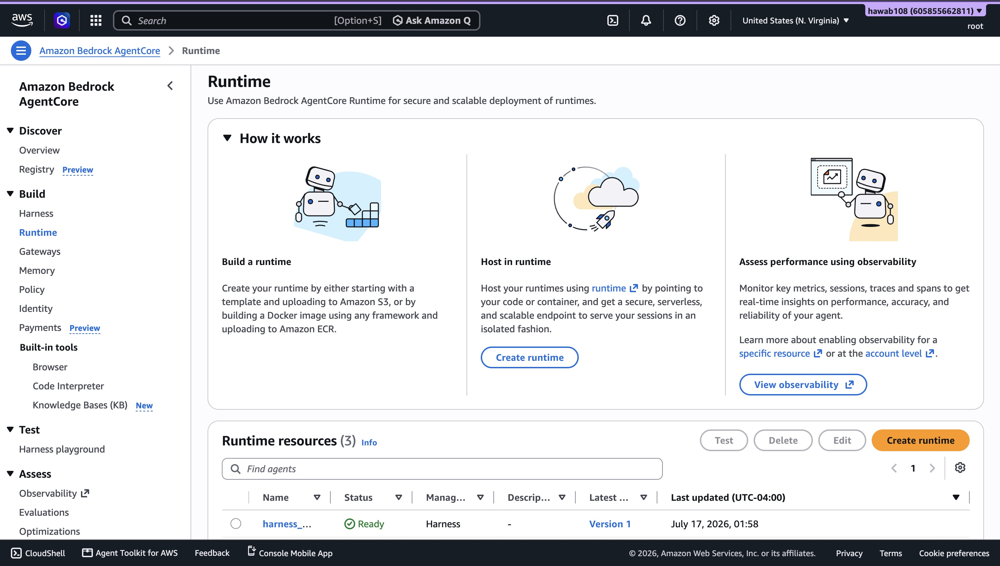
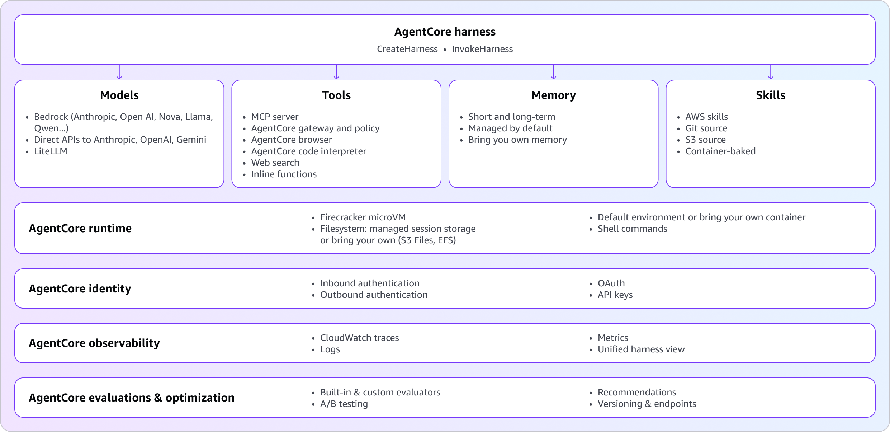
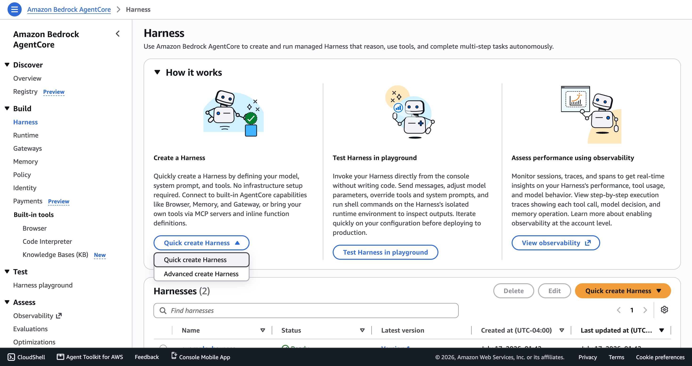
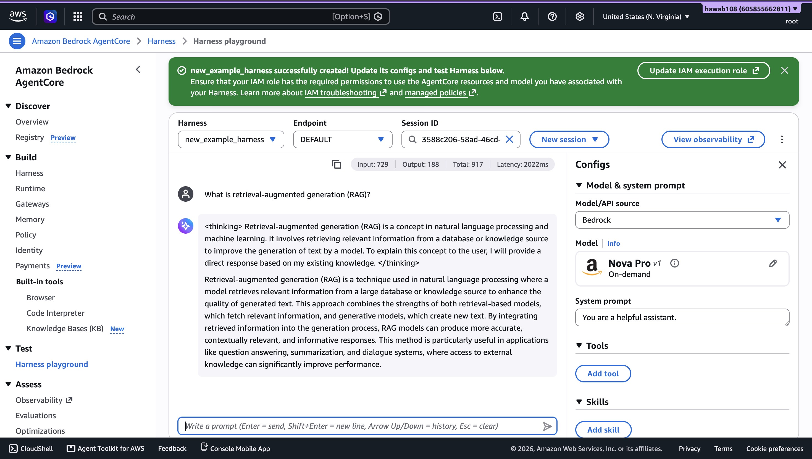
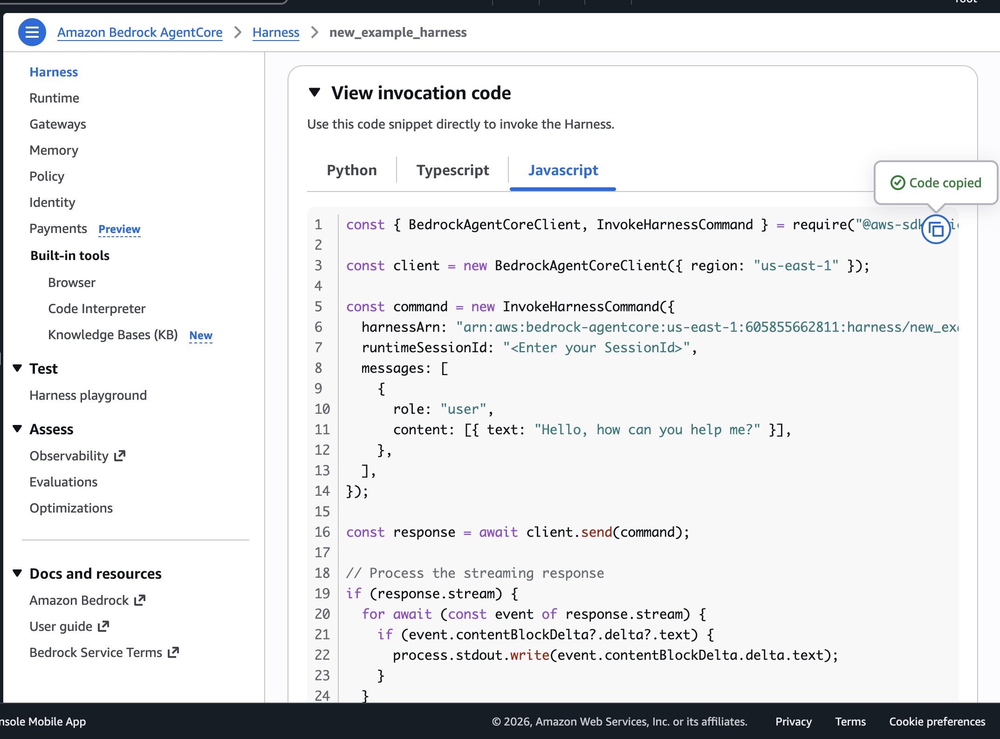

Overview
Amazon Bedrock AgentCore is a managed AWS platform for running AI agents in production. It handles the infrastructure required to securely execute, monitor, and scale agents while allowing developers to build them using their preferred frameworks and foundation models. Instead of managing servers, authentication, and monitoring yourself, AgentCore provides these capabilities as managed services so you can focus on developing your agent's functionality.

Core Services
- AgentCore Harness
- Click Create Harness.
- Select Quick Create for the fastest setup.
- Enter a name for your harness.
- After creation, your agent becomes available in the Harness Playground.
- Foundation model (Amazon Bedrock, OpenAI, or Google Gemini)
- System prompt
- Tools
- Skills
- Model parameters (maximum tokens, temperature, and top P)
- Invocation limits
- AgentCore Runtime
- Open the Amazon Bedrock AgentCore Console.
- Select Harnesses.
- Choose your harness.
-
On the details page, locate the following information:
- Harness ARN
- Runtime ARN (created automatically)
- Runtime ID
- Status (should display Ready)

- Open your harness details page.
- Click Test in Playground.
- Begin interacting with your agent.
- Open your harness details page.
- Click View invocation code.
- Select your preferred language:
- Python
- TypeScript
- JavaScript
- Copy the generated code, which includes your harness ARN.
- AgentCore Gateway
- Connect agents to APIs and AWS Lambda functions
- Route requests to other agents or web services
- Send model requests to supported foundation models
- Convert existing services into MCP-compatible tools
- MCP Targets – Expose tools through the Model Context Protocol (MCP).
- HTTP Targets – Route requests to web services or other agents.
- Inference Targets – Send requests to foundation models through a single endpoint.
- Secure authentication using IAM, OAuth, API keys, and other identity providers
- Automatic routing of requests to tools and services
- Centralized tool management and discovery
- Built-in monitoring and auditing
- Integration with services such as Salesforce, Slack, Jira, Asana, and Zendesk
- Simplifies connections between agents and external services
- Reduces the need for custom integration code
- Provides secure access to enterprise applications
- Works with frameworks such as LangChain, Strands Agents, and custom agent implementations
- AgentCore Memory
- Short-Term Memory – Stores information for the current conversation, allowing the agent to maintain context.
- Long-Term Memory – Remembers important information, such as user preferences and previous interactions, across multiple conversations.
- Semantic – Stores important facts.
- Summarization – Saves conversation summaries.
- User Preference – Remembers user settings and preferences.
- Episodic – Learns from previous interactions.
- Custom – Allows developers to define custom memory behavior.
- Automatic memory management
- Configurable memory strategies
- Per-user memory isolation
- Built-in encryption and IAM-based access control
- AgentCore Policy
- Identity-based – Control access based on users or roles.
- Resource-based – Restrict access to specific data or resources.
- Time-based – Allow actions only during certain times.
- Risk-based – Block actions that exceed defined limits.
- Conditional – Apply rules based on context, such as location or request details.
- Controls access to tools, data, and actions
- Uses the Cedar policy language
- Integrates with AgentCore Gateway
- Supports audit logging and policy versioning
- Helps enforce security and compliance requirements
- AgentCore Identity
- OAuth 2.0 – Connect to services like Google and Salesforce.
- AWS IAM – Secure access to AWS resources.
- OIDC & SAML – Integrate with enterprise identity providers.
- API Keys – Support authentication for custom services.
- Secure storage for credentials and tokens
- Automatic token validation and refresh
- Identity-aware access control
- Built-in encryption and IAM integration
- Audit logging and credential management
Every AI agent needs a harness, as it is the system that allows it to run. The harness is responsible for calling the language model, deciding when to use tools, keeping track of context, handling errors, and managing the resources the agent depends on. It also provides the infrastructure needed to run an agent, including compute, memory, storage, identity, networking, and monitoring. Building a simple agent on your local machine is relatively easy. Running that same agent in production is much more difficult. As more users begin using the agent, developers must manage concurrent requests, isolate user sessions, handle authentication, store state, and scale the application. Traditionally, all of this infrastructure had to be built and maintained by the development team.

To Create a Harness:
Step 1: Access the AgentCore Console
Navigate to the Amazon Bedrock AgentCore Console.
Step 2: Create a Harness

Step 3: Configure the Harness
In the Harness Playground, use the configuration panel to customize your agent.
Step 4: Test and Iterate
Test your harness directly in the playground. Make changes to the configuration as needed until the agent behaves as expected.

AgentCore Runtime provides a managed agent harness that handles this infrastructure automatically. Developers define their agent by specifying its model, tools, and instructions, while AgentCore Runtime manages the environment needed to run it securely and reliably. This makes it easier to update an agent by changing its configuration instead of rebuilding the supporting infrastructure.
After creating a harness, you can retrieve its runtime information and begin interacting with it through the AWS Console or the AWS CLI.
Step 1: Locate Your Harness Runtime Information
Using the AWS Console
Using the AWS CLI
Run the following command:
aws bedrock-agentcore-control get-harness \
--harness-id "your-harness-id"You can run this command from AWS CloudShell or any environment where the AWS CLI is configured.
Step 2: Invoke Your Harness
Method: Using the Harness Playground
Step 3: Generate Invocation Code

Amazon Bedrock AgentCore Gateway helps AI agents securely communicate with external tools and services. Instead of connecting to each tool individually, agents use the Gateway as a single access point. The Gateway manages these connections using the Model Context Protocol (MCP), making it easier to discover and use available tools. gentCore Gateway can connect directly to Knowledge Bases, making it easier for AI agents to retrieve information from your data. This built-in integration is especially useful for RAG applications, where an agent combines information from a knowledge base with a foundation model to generate more accurate and relevant responses.
How It Works
The Gateway receives requests from an AI agent and routes them to the appropriate destination. It can:
Gateway Targets
AgentCore Gateway supports three types of targets:
Key Features
Benefits
AgentCore Memory is a managed service that allows AI agents to remember information from conversations. It helps agents provide more personalized and context aware responses by storing information during and across sessions.
Memory Types
Memory Strategies
Key Features
AgentCore Policy helps control what AI agents are allowed to do. It checks each tool request before it runs and enforces rules to ensure agents only perform approved actions.
Policy Types
Key Features
AgentCore Identity is a managed service that allows AI agents to securely access AWS services and third-party applications. It manages authentication and credentials so agents can connect to external services without storing sensitive information in code.
Supported Authentication
Key Features
Reference
For a more comprehensive guide, visit the AWS official documentation site.